전에는 대화창이 툭 나타나고 툭 사라졌습니다. 이제는 튀어오르듯 들어오고, 말투에 따라 창이 뜨는 모습과 글자 속도가 달라집니다. 아래는 실제 게임 화면을 찍은 사진입니다.
연출은 네 곳에 들어갔습니다. 각각 따로 켜지는 게 아니라, 제작자가 고른 말투 하나로 네 가지가 같이 바뀝니다.
| 어디 | 무엇이 달라졌나 |
|---|---|
| 창 | 살짝 커졌다가 제자리로 오면서 들어옵니다. 나갈 때는 작아지며 흐려집니다. |
| 이름표·얼굴 | 창보다 조금 늦게, 자기 쪽에서 밀려 들어옵니다. |
| 글자 | 한 글자씩 차오릅니다. 말투에 따라 빠르거나 느립니다. |
| 화면 | 대화 중에는 아래쪽 배경이 가라앉습니다. 화내면 창이 한 번 흔들리고, 놀라면 화면이 번쩍합니다. |
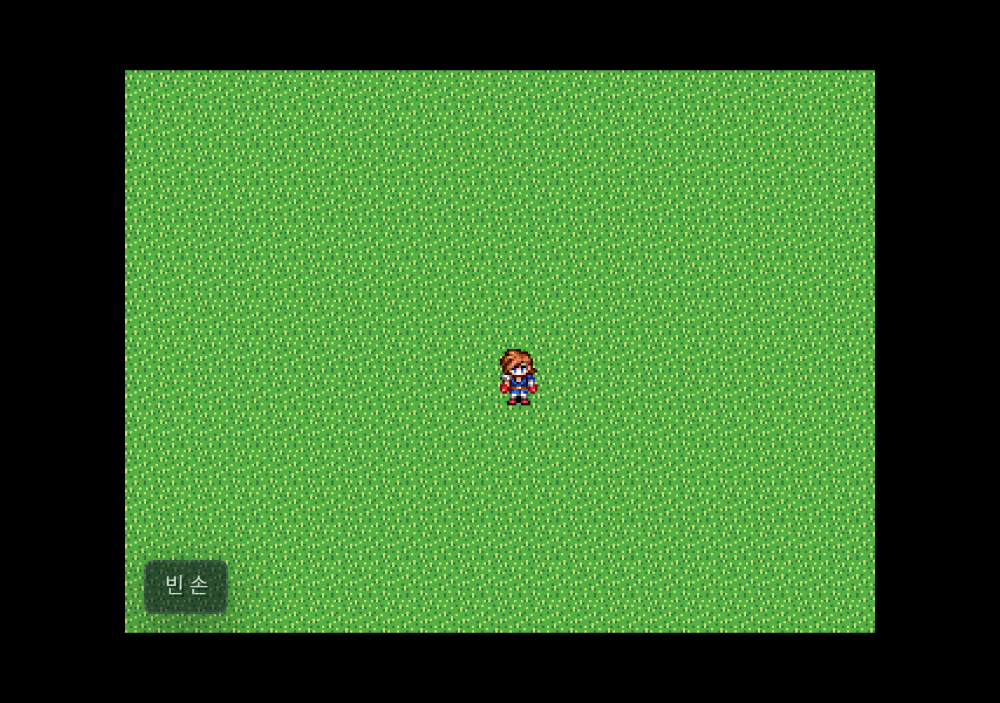
연출은 0.17초면 끝납니다. 너무 빨라서 그냥 찍으면 이미 끝난 모습만 나옵니다. 그래서 연출이 시작되는 순간에 화면을 일시정지시켜 찍었습니다. 아래 왼쪽이 그 순간입니다.
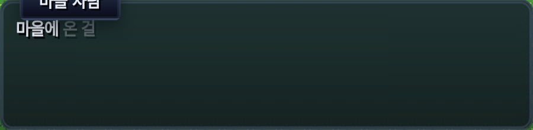
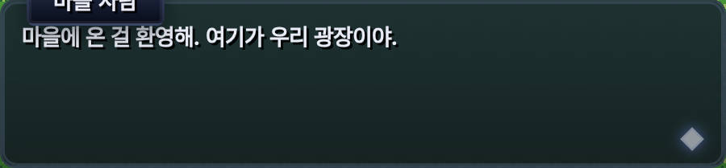
높이 220.97 → 210.45. 이 10.5px 차이가 "튀어오르는" 느낌의 전부입니다. 가로는 일부러 거의 안 부풀립니다 — 가로로 부풀리면 좁은 화면에서 창이 화면 밖으로 밀려나갑니다.
두 사진을 나란히 놓으면 차이가 잘 안 보입니다. 그래서 더 큰 만큼을 빨갛게 칠했습니다.
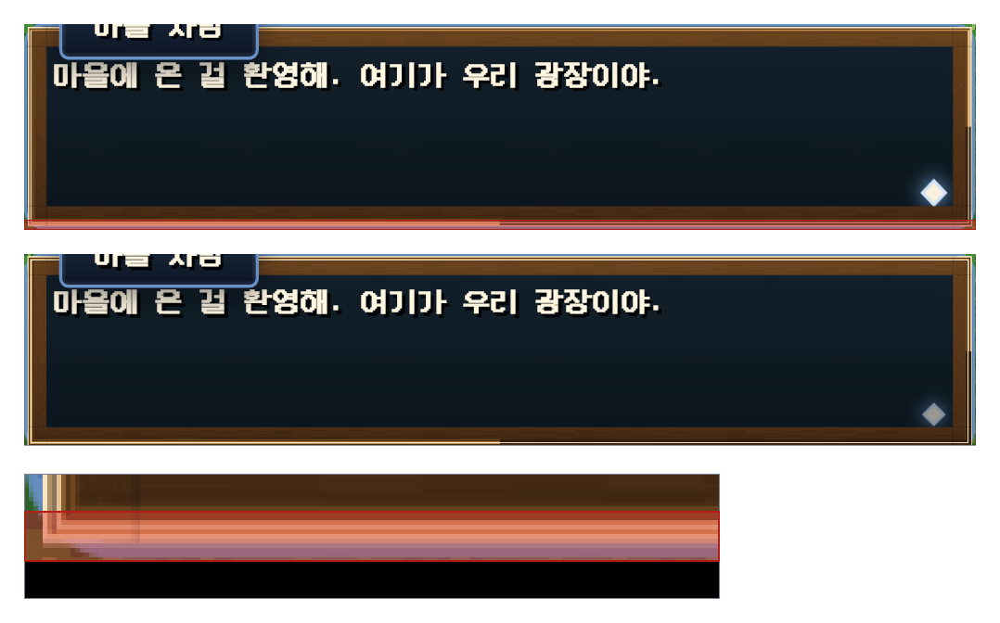
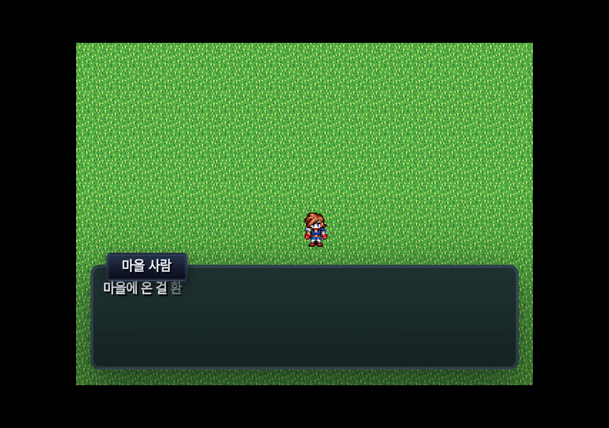
제작자가 고르는 말투는 기본 · 기쁨 · 슬픔 · 분노 · 놀람 다섯 가지입니다. 왼쪽 줄이 들어오는 순간, 오른쪽 줄이 다 들어온 뒤입니다.
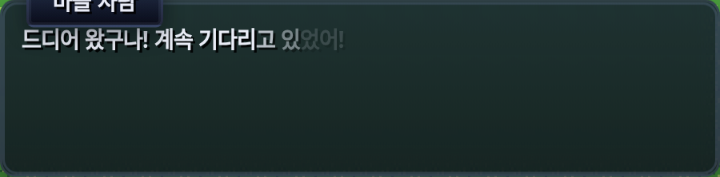
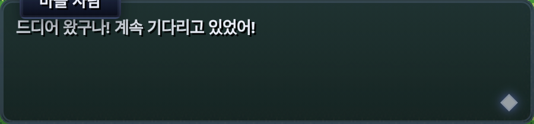
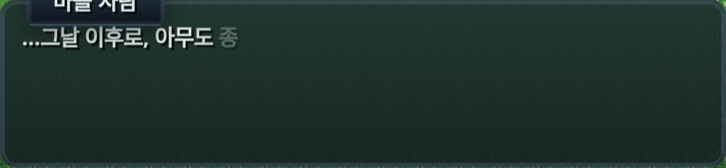
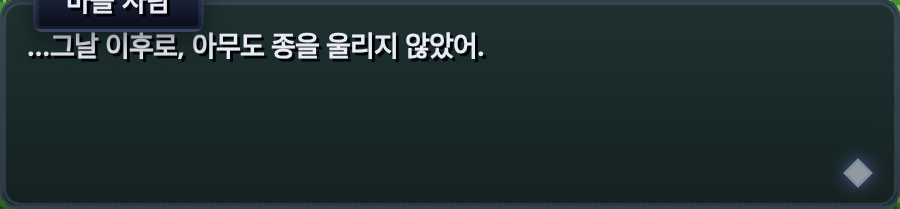
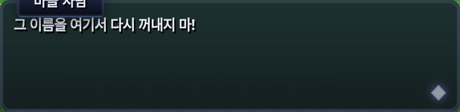
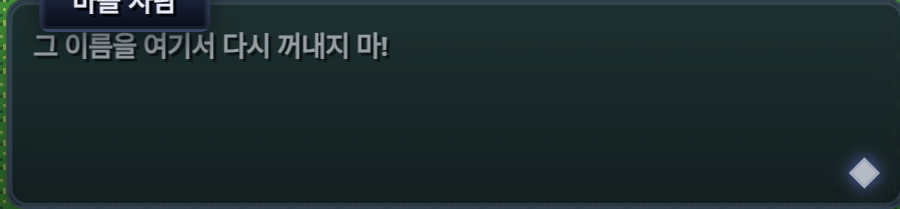
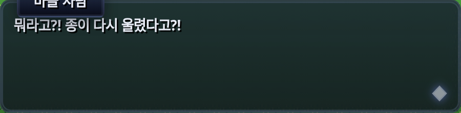
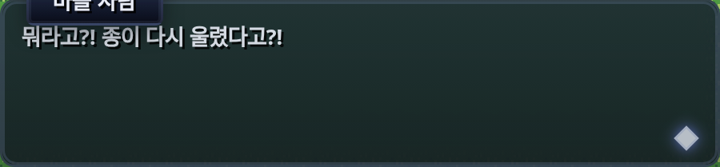
이건 전에도 있었지만, 전에는 한 글자 찍을 때마다 글자 전부를 다시 그렸습니다. 그러면 이미 떠 있던 글자까지 매번 새로 만들어지니, 글자마다 붙인 등장 연출이 프레임마다 처음으로 되감겼습니다. 사실상 글자 등장 연출을 붙일 방법이 없었던 겁니다. 이제는 이미 찍은 글자는 건드리지 않고 뒤에만 덧붙입니다. 그래서 새로 붙는 글자만 한 번 부드럽게 밝아지고, 앞 글자들은 가만히 있습니다.
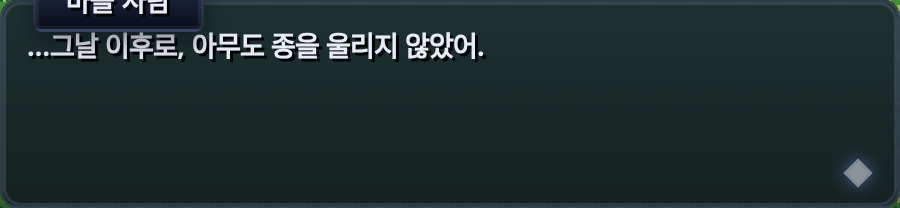
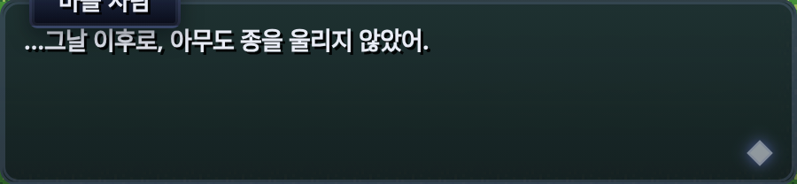
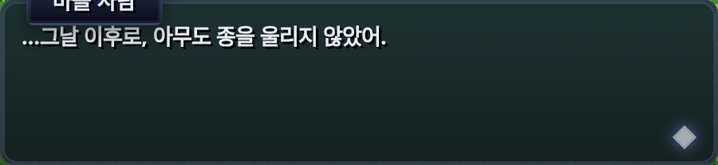
\s[20](20 × 8ms = 160ms) 과 \|(1초) 입니다.
위 세 장은 슬픔 말투입니다.
대화 중에는 창 뒤쪽 배경을 어둡게 깔아 글자를 읽기 쉽게 만듭니다. 다만 화면 전체를 어둡게 하지 않습니다. 어둠은 창 쪽에서만 올라오고 조금 위로 가면 완전히 사라집니다. 플레이어가 지도와 캐릭터를 계속 볼 수 있어야 하니까요.
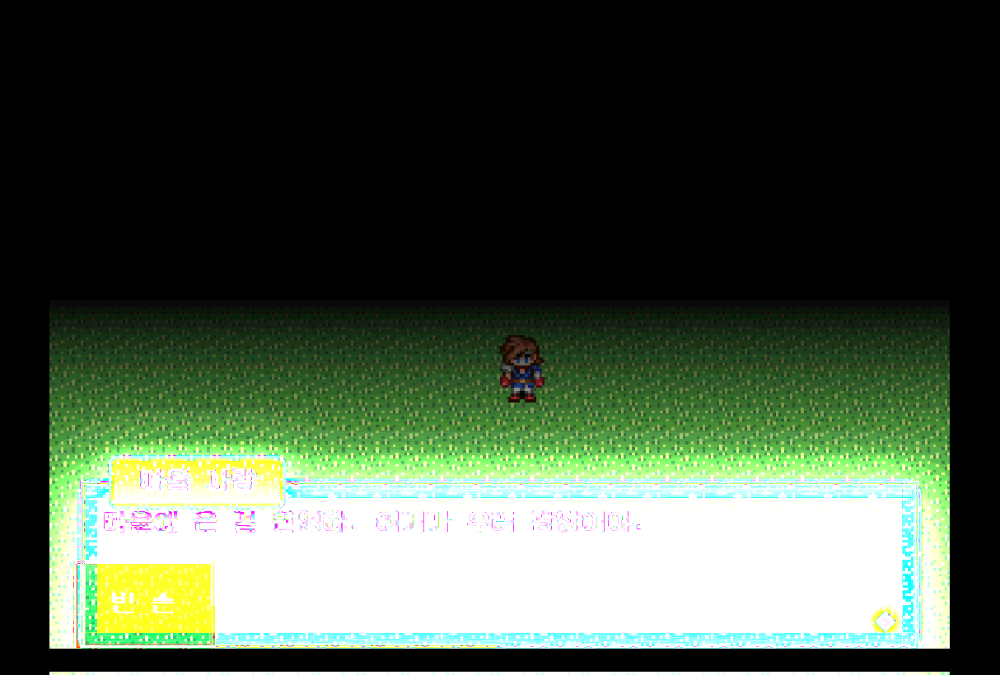
| 창 위쪽 지도 | 창 없을 때 | 창 있을 때 | 달라진 정도 |
|---|---|---|---|
| 위쪽 (창에서 가장 먼 곳) | 125.9 | 125.9 | 0.0% 그대로 |
| 가운데 | 125.8 | 125.8 | 0.0% 그대로 |
| 아래쪽 (창 바로 위) | 124.7 | 116.9 | −6.3% 살짝 어둡게 |
게임 화면만 오려낸 no-dialogue-play.png 와 settled-1neutral-play.png 에서,
창이 가리지 않은 위쪽 지도만 세 칸으로 나눠 잰 밝기 평균(0~255)입니다.
창이 덮은 자리를 같이 재면 −57.9% 가 나오는데, 그건 어두워진 게 아니라 나무 액자에 가려진 것이라 뺐습니다.
숫자는 reports/dialogue-easy/build-figures.py 가 찍어 냅니다.
dialogue.css 에 아래에서 56% 지점에서
완전히 투명해지도록 적혀 있습니다. 사진에서 어둠이 사라지는 줄을 찾아 보면 아래에서 56%
— 적힌 값과 같습니다. 창이 화면 아래 33% 를 덮으니, 어둠이 보이는 구간은 창 윗변과 그
56% 선 사이의 좁은 띠뿐이고, 거기서도 가장 진한 자리가 255 중 17 만큼입니다.
가운데와 위쪽은 그 선 밖이라 손대지 않습니다.
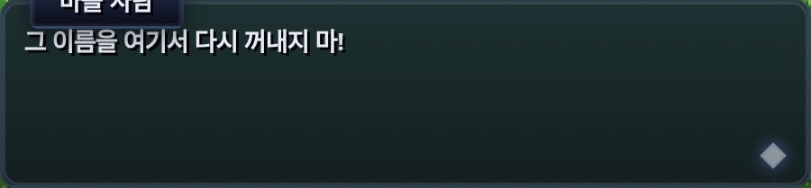
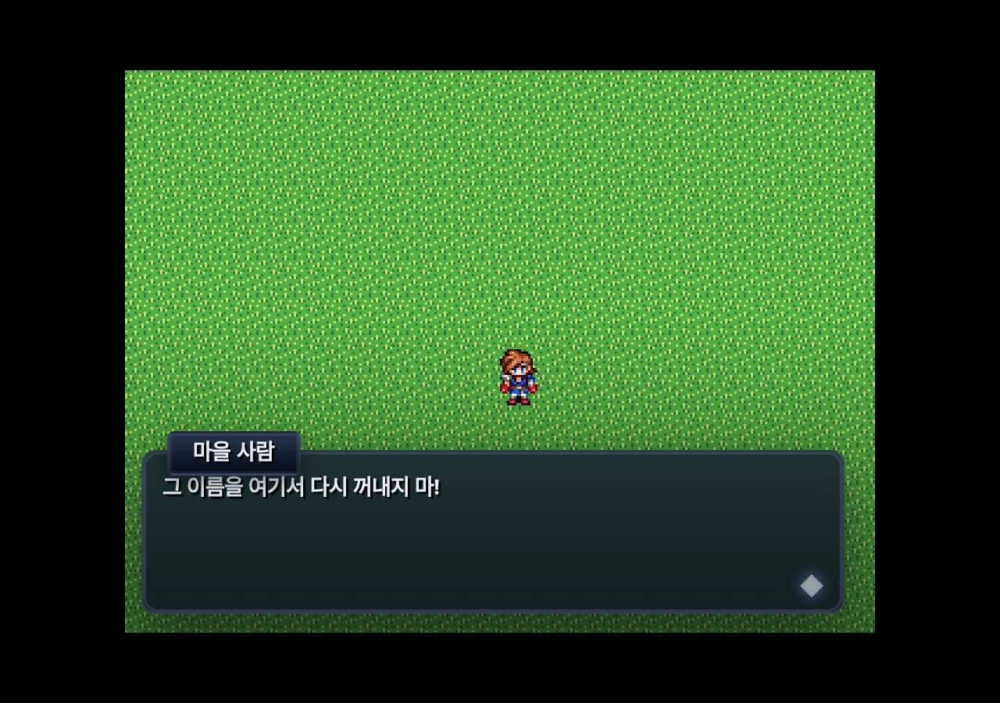
흔들림은 창만 흔듭니다. 지도까지 흔들면 멀미가 나고, 대화창은 지도와 다른 층에 있어서 같이 흔들 수도 없습니다.
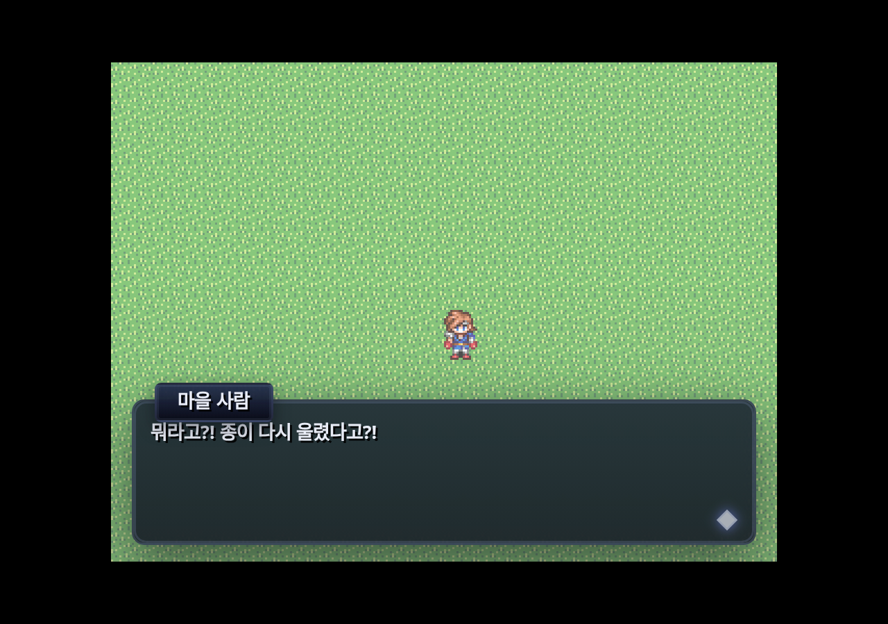
「문장 표시」 명령을 열면 말투·연출 칸이 바로 보입니다. 전에는 이 칸이 접힌 「고급 옵션」 안에 숨어 있어서 아무도 쓰지 않았습니다.
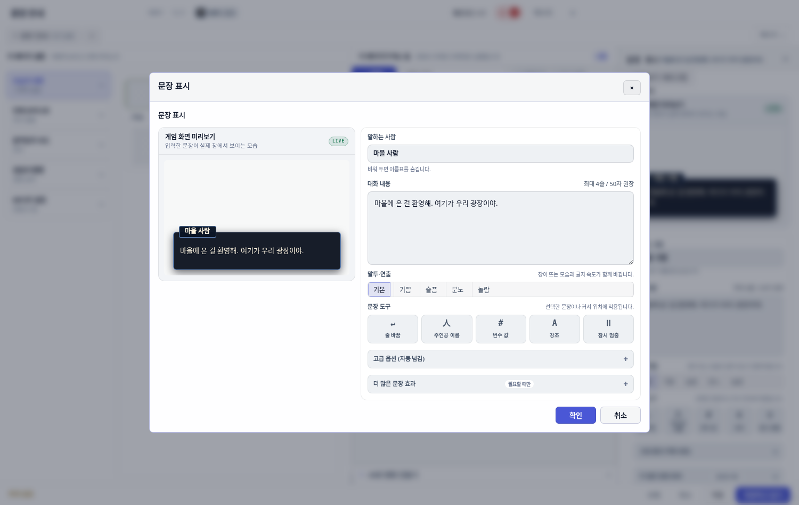
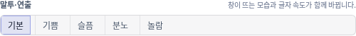
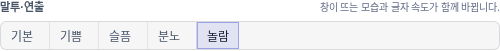
중요한 건 미리보기가 게임과 같은 연출을 재생한다는 점입니다. 말투 버튼을 누르는 순간 왼쪽 미리보기 창이 그 연출로 다시 들어옵니다.
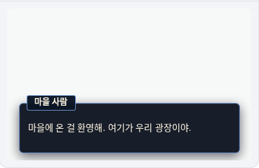
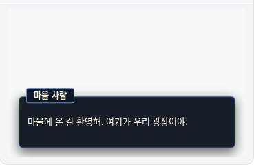
운영체제에서 「움직임 줄이기」를 켠 사람에게는 움직임만 뺍니다. 창이 안 뜨는 게 아니고, 튀어오르기와 흔들림과 번쩍임만 없어집니다. 대신 0.06초짜리 아주 짧은 흐림 → 선명 만 남습니다.
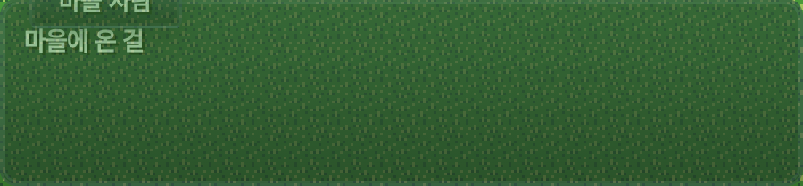
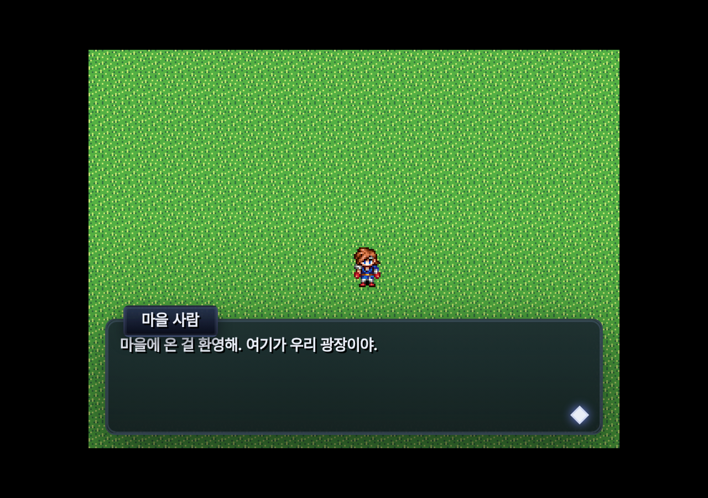
남기는 것: 창, 이름표, 배경 어둡게, 말투별 글자 속도. 빼는 것: 튀어오르기, 흔들림, 번쩍임, 글자 하나하나의 등장 움직임.
연출 사진을 확대해서 보다가 화자 이름표가 대화 첫 줄을 덮고 있는 것을 발견했습니다. 연출 때문에 생긴 게 아니고, 그 전부터 계속 있던 문제였습니다.
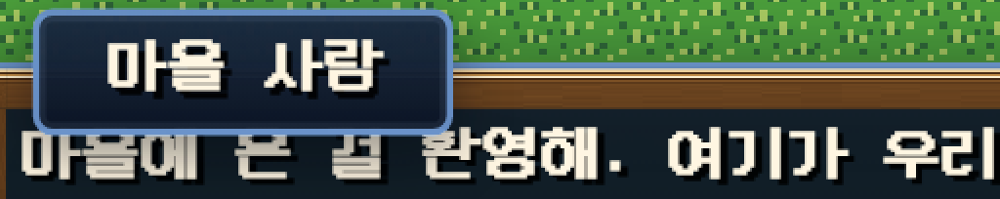
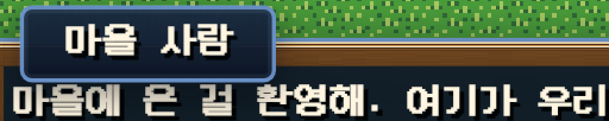
이름표는 창 위쪽 변에 걸쳐 있는 탭입니다. 창 밖으로 9px 올라가 있고 높이가 19px 이라, 아래 변이 창 안쪽으로 10px 들어옵니다. 그런데 본문이 비켜 주는 자리는 8px 로 적혀 있었습니다. 두 숫자가 다른 파일에 손으로 적혀 있어서 서로를 몰랐던 겁니다.
| 항목 | 값 | 뜻 |
|---|---|---|
| 이름표 위치 | −9px | 창 위쪽 변보다 9px 위로 나와 있다 |
| 이름표 높이 | 19px | 글씨 크기에 따라 달라진다 |
| 이름표 아래 변 | 10px | −9 + 19 = 창 안쪽 10px 지점 |
| 본문이 비켜 준 자리 | 8px | 손으로 적어 둔 값 |
| 겹친 양 | 2px | 10 − 8. 첫 줄 글자 윗부분이 잘렸다 |
8을 10으로 바꾸는 건 안 했습니다. 글씨 크기가 바뀌면 또 어긋나기 때문입니다. 대신 창을 그릴 때 이름표를 실제로 재서 그만큼 자리를 비우게 했습니다. 글씨가 커지면 자리도 같이 커집니다.
test/e2e/dialogue-nameplate-clears-body.spec.ts. 고치기 전에 돌리면
"이름표 아래 변이 본문 첫 줄을 2px 덮는다"라고 정확히 알려 줍니다.
제작자가 만질 필요는 없습니다. 말투 하나를 고르면 아래 줄 하나가 통째로 적용됩니다.
| 말투 | 창 들어오기 | 창 나가기 | 이름표 지연 | 배경 어둡게 | 글자 속도 | 추가 연출 |
|---|---|---|---|---|---|---|
| 기본 | 170ms | 120ms | 40ms | 28% | 1.00배 | — |
| 기쁨 | 180ms | 120ms | 40ms | 22% | 0.95배 | 더 크게 튐 |
| 슬픔 | 260ms | 170ms | 70ms | 34% | 1.35배 (느림) | 튀지 않음 |
| 분노 | 140ms | 110ms | 0ms | 42% | 0.80배 | 창 흔들림 |
| 놀람 | 160ms | 110ms | 0ms | 20% | 0.80배 | 화면 번쩍 |
| 움직임 줄이기 | 60ms | 60ms | 0ms | 말투 값 유지 | 말투 값 유지 | 전부 없음 |
연출은 눈으로만 보면 "있는 것 같다"까지밖에 알 수 없습니다. 그래서 확인 방법을 나눠 두었습니다.
| 무엇을 | 어떻게 | 결과 |
|---|---|---|
| 말투표가 맞나 | 화면 없이 도는 테스트로 5가지 값과 "모르는 말투 → 기본" 처리를 확인 | 통과 |
| 클래스만 붙고 연출이 비어 있지 않나 | 스타일 파일 글자를 직접 읽어 각 연출 이름이 실제로 정의돼 있는지 확인 | 통과 |
| 글자를 다시 그리지 않나 | 글자 하나 켤 때 앞 글자 조각이 같은 물건인지 확인 | 통과 |
| 글자 찍히는 시간이 안 바뀌었나 | 기존 타이밍 테스트를 한 줄도 고치지 않고 그대로 돌림 | 통과 |
| 내보낸 게임에도 스타일이 들어가나 | 실제로 빌드해서 결과물 안에 연출 규칙이 있는지 확인 | 통과 |
| 편집 창 미리보기와 게임이 어긋나지 않나 | 두 쪽이 쓰는 선택자 목록을 맞대어 확인 | 통과 |
| 이름표가 첫 줄을 안 덮나 | 진짜 브라우저에서 이름표와 첫 줄 상자를 재서 확인 | 통과 |
| 연출이 진짜 도나 | 진짜 브라우저에서 연출 이름과 모양을 읽어 확인 (이 보고서 사진들) | 통과 |
| 대화 관련 테스트 전체 | 9개 파일을 한 번에 돌림 | 85 / 85 |
| 파일 | 무엇 |
|---|---|
src/player/dialoguePresentation.ts | 말투표. 계산만 하고 화면은 안 만짐 |
src/player/dialogueTextRenderer.ts | 글자를 하나씩 켜는 새 방식 |
src/player/dialogue.ts | 창 만들기·치우기 시점, 이름표 자리 재기 |
src/player/playSceneInterpreter.ts | 말투 값을 창까지 넘겨 줌 (전에는 여기서 버려졌다) |
src/styles/dialogue.css | 실제 연출 곡선, 배경 어둡게, 움직임 줄이기 |
src/editor/panels/eventEditor/commandBodyCore.ts | 「말투·연출」을 접힌 곳에서 꺼내 상시 노출 |
src/editor/panels/eventEditor/commandPreview.ts | 편집 창 미리보기에 같은 연출 재생 |